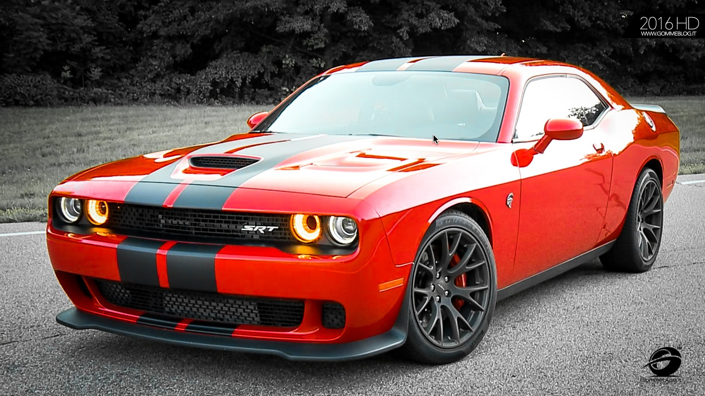
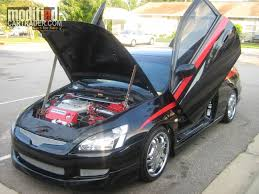
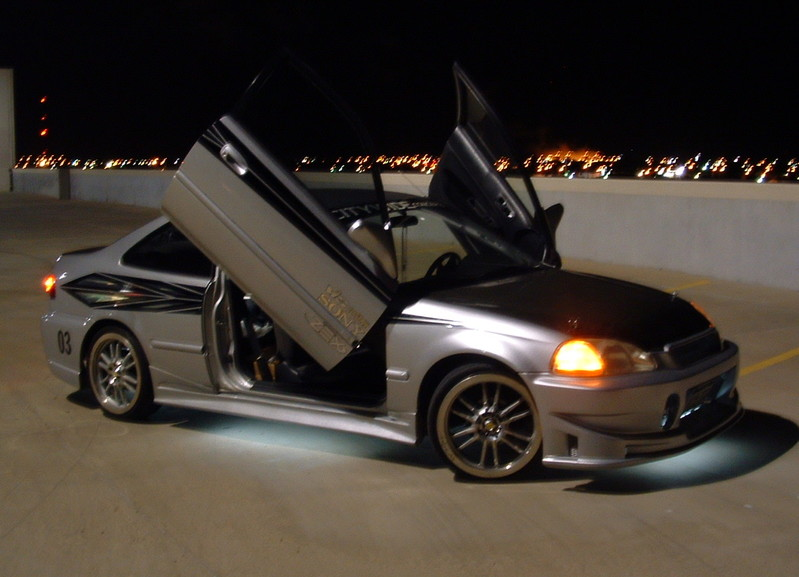
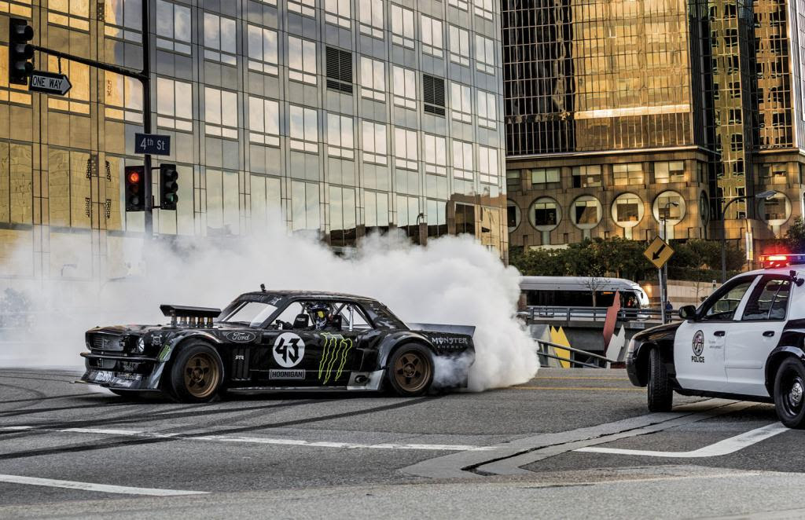
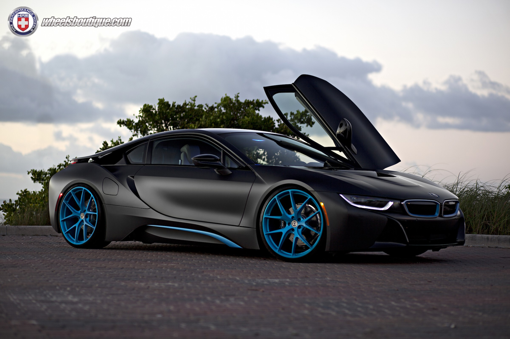

The exotic 2017 Dodge Challenger SRT Automatic Hellcat. 707 HP, for a
whopping $62,000 base starting price. (not even $10k for 100 hp each).
Curb weight: 4448 lbs
MPG: 13 city / 22 hwy
Engine: 6.2 L V8
Torque: 650 lb-ft

A modded 2007 2 door Honda Accord. Unfortunately, I own a 4 door,
however, I would love to have this door design on my own car, except
I don't believe butterfly doors work on 4 doors. :(
(Stock Specs)
Curb weight: 3,053 to 3,435 lbs (Coupe)
MPG: 26 city / 34 highway
Engine: Unknown
Torque: Unknown

A heavily, heavily modded '98 Honda Civic, obviously made into
a drift build for drag / drift racing purposes. Sick car though!
(Stock Specs)
Curb weight: 2,342 to 2,504 lbs
MPG: 36 city / 44 highway
Engine: 1.6 L 4-cylinder
Torque: Unknown

This car is Ken Block's infamous drifting Mustang.
Look at that cop car compared to that smoke.
If I were that cop I'd just sit back and watch the show.
Curb weight: Unknown
MPG: Unknown
Engine: 6.7-liter Roush Yates Racing V8
Torque: Unknown

Probably one of the coolest looking newer cars, in my opinion.
I think it'd be crazy cool to turn this into a drift machine.
Curb weight: 3455 lbs
MPG: 94
Engine: 1.5 L 3-Cylinder
Torque: 420 lb-ft